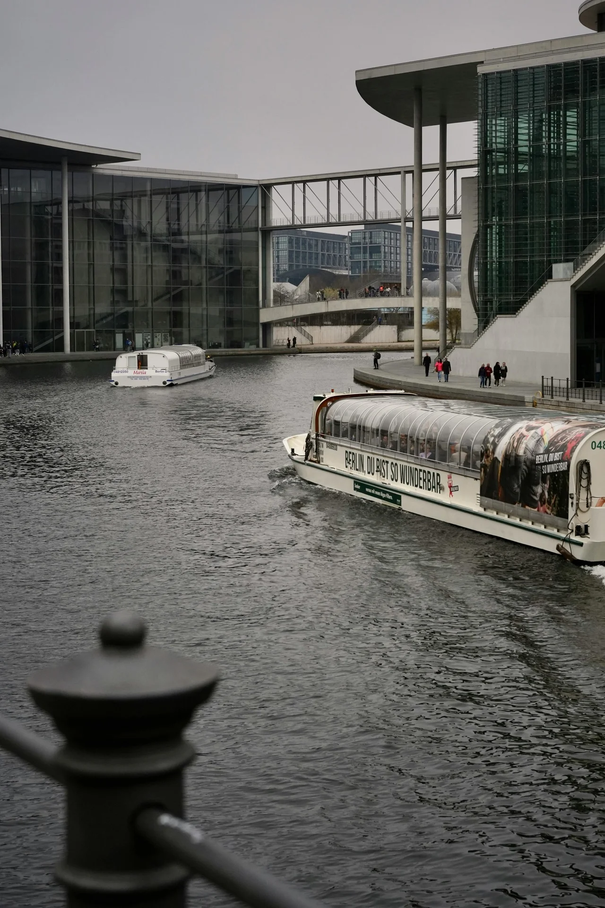
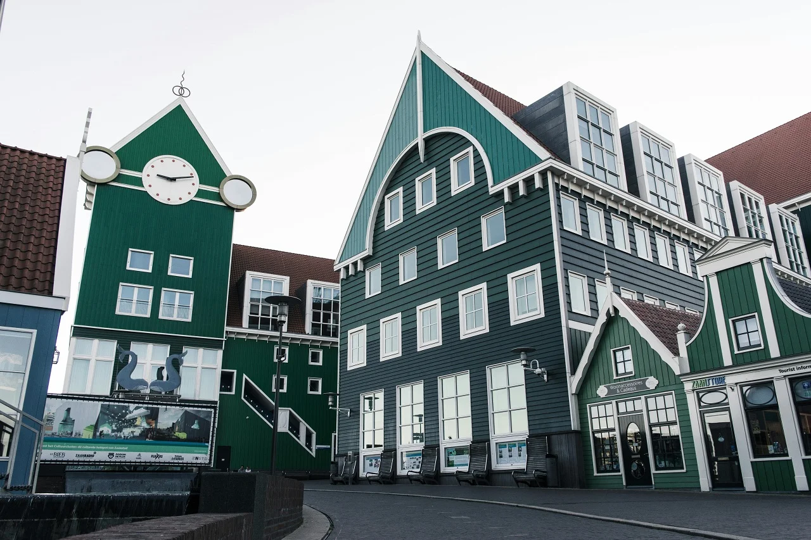
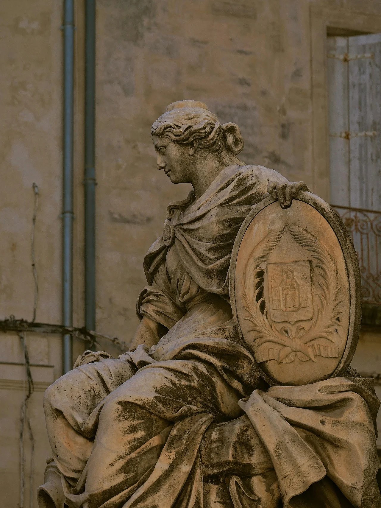

Descubre destinos increíbles en Europa
Encuentra las mejores recomendaciones para conocer los rincones más únicos del continente.
Noruega
Alemania
- 
Países Bajos
- 
Malta
-

- 
Encuentra las mejores recomendaciones para conocer los rincones más únicos del continente.